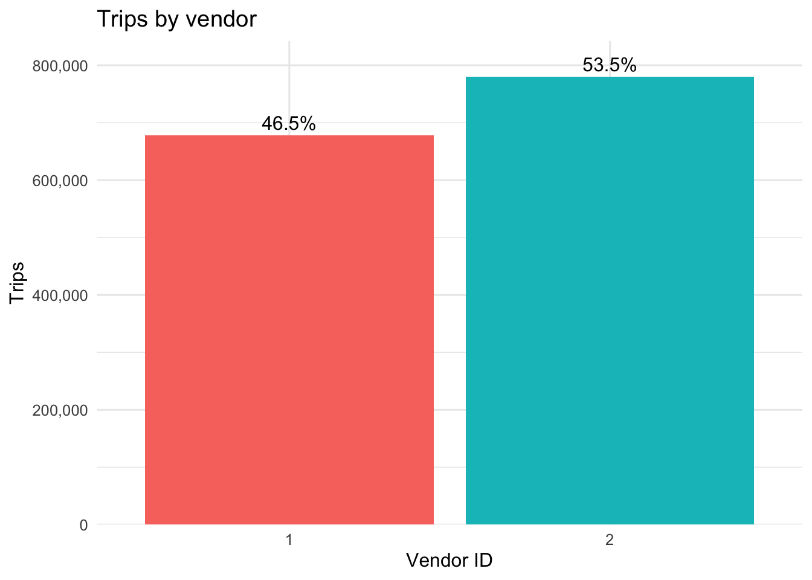
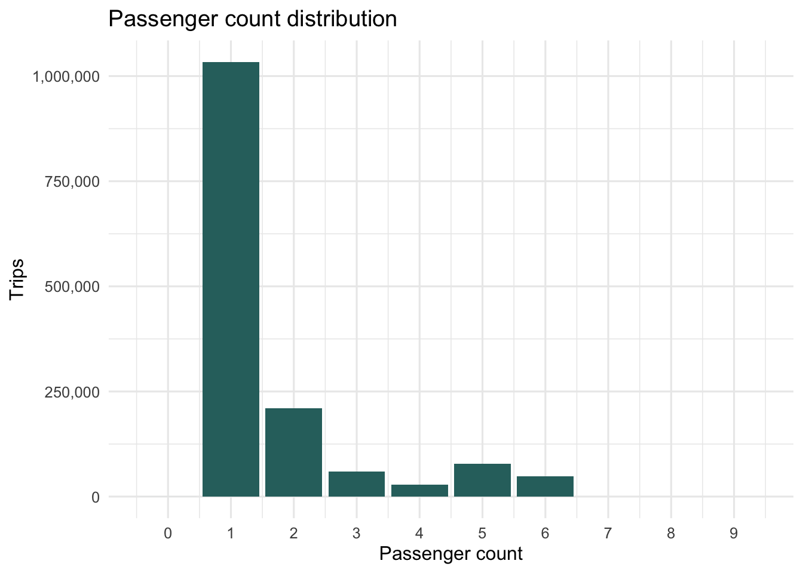
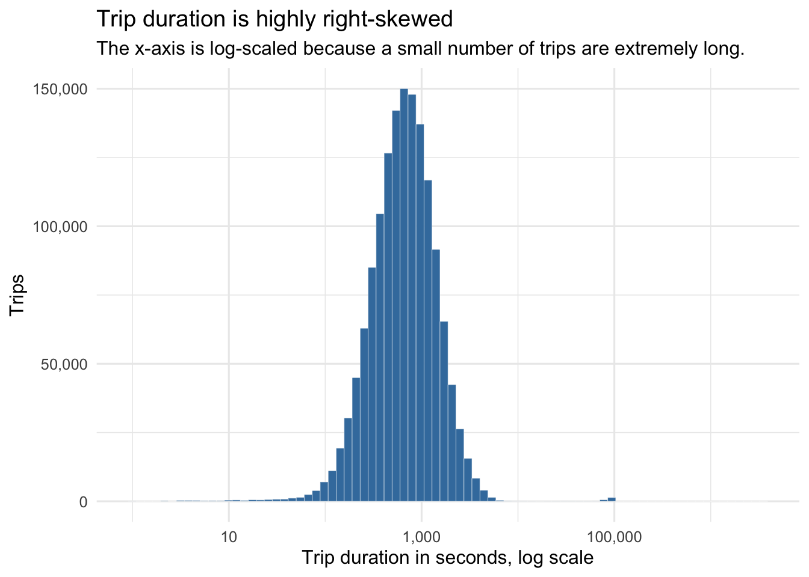
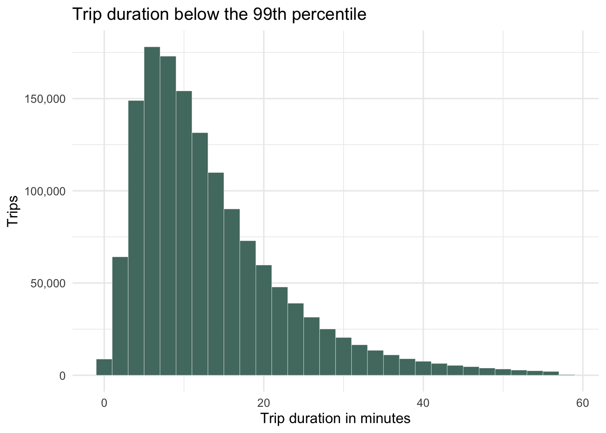
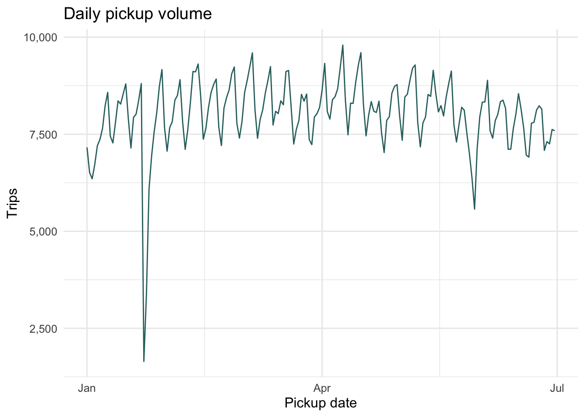
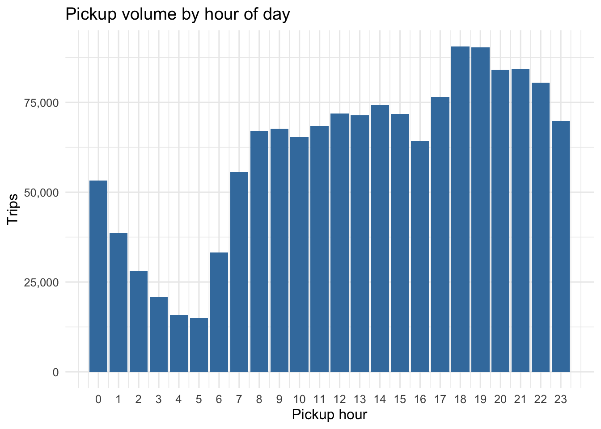
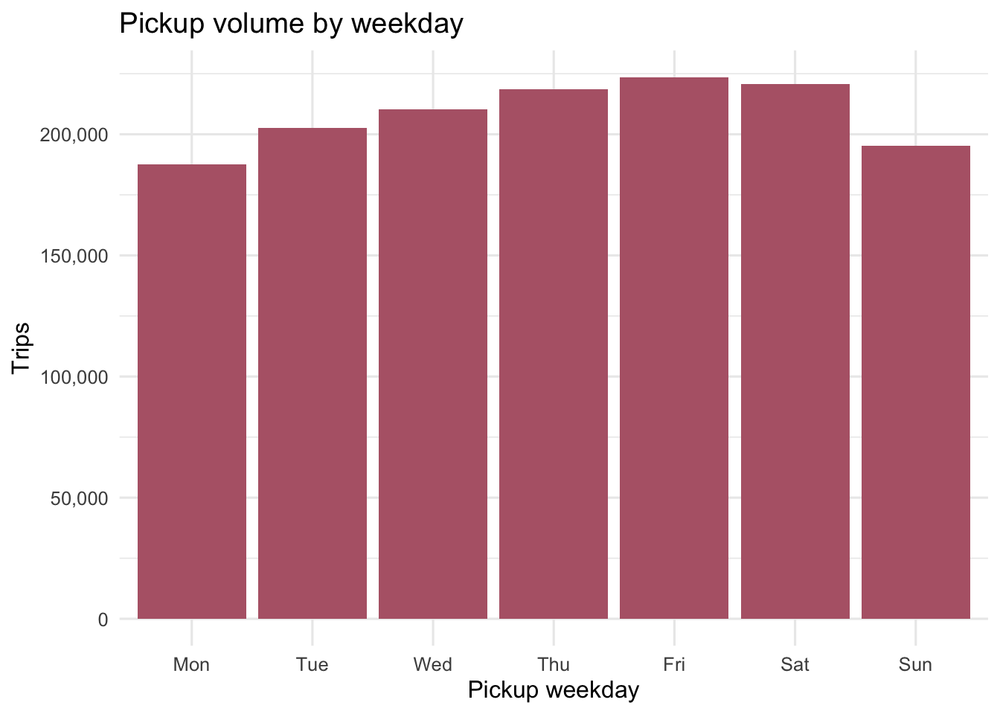
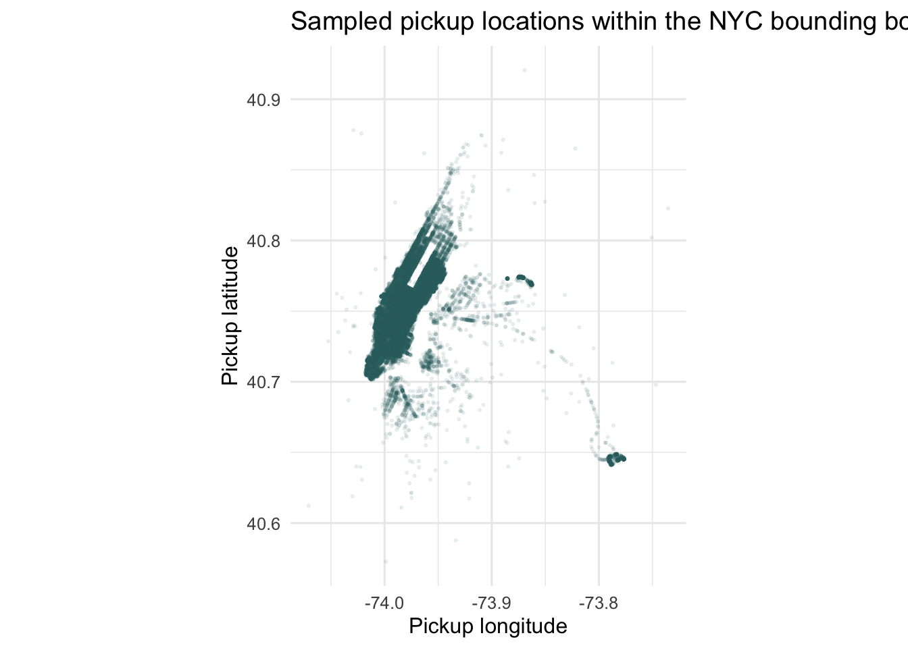
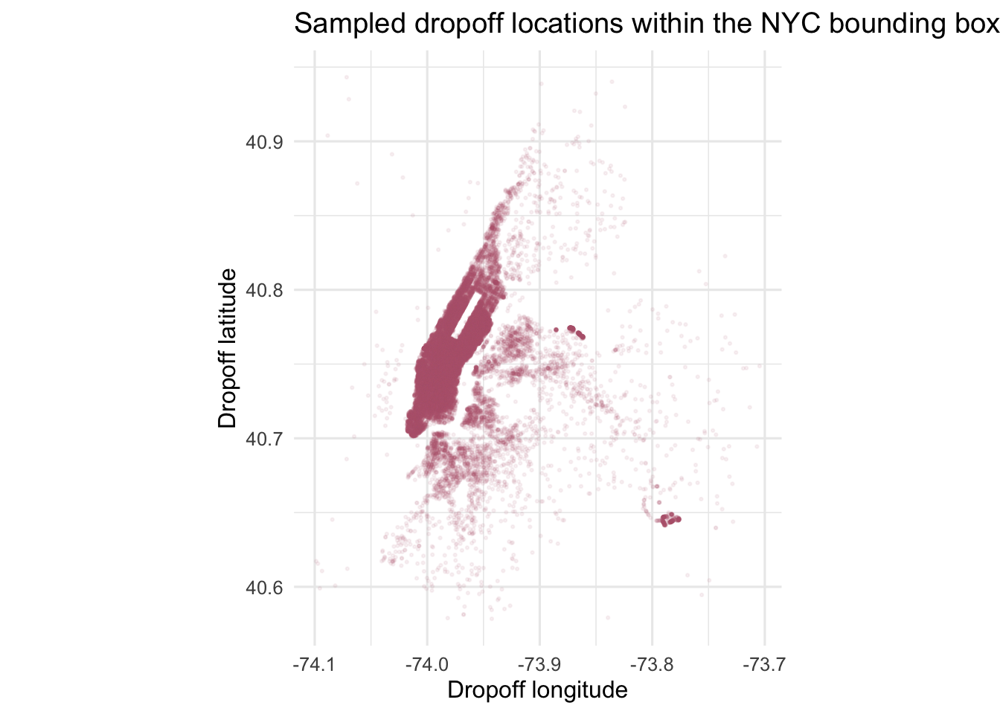

library(tidyverse)
library(lubridate)
library(scales)
theme_set(theme_minimal(base_size = 12))NYC Taxi Trip Duration: First Look
1 Goal
This document starts with a first exploratory look at data/train.csv. The aim is to understand the shape, variables, date coverage, missingness, basic distributions, and obvious data quality issues before doing feature engineering or modeling.
2 Setup
3 Read the Training Data
train_raw <- readr::read_csv("data/train.csv", show_col_types = FALSE)
train <- train_raw %>%
mutate(
pickup_date = as_date(pickup_datetime),
pickup_month = floor_date(pickup_datetime, "month"),
pickup_wday = wday(pickup_datetime, label = TRUE, week_start = 1),
pickup_hour = hour(pickup_datetime),
duration_min = trip_duration / 60,
duration_hour = trip_duration / 3600,
store_and_fwd_flag = factor(store_and_fwd_flag),
vendor_id = factor(vendor_id)
)The training file has 1,458,644 rows and 11 original columns.
glimpse(train_raw)Rows: 1,458,644
Columns: 11
$ id <chr> "id2875421", "id2377394", "id3858529", "id3504673",…
$ vendor_id <dbl> 2, 1, 2, 2, 2, 2, 1, 2, 1, 2, 2, 2, 2, 2, 2, 1, 2, …
$ pickup_datetime <dttm> 2016-03-14 17:24:55, 2016-06-12 00:43:35, 2016-01-…
$ dropoff_datetime <dttm> 2016-03-14 17:32:30, 2016-06-12 00:54:38, 2016-01-…
$ passenger_count <dbl> 1, 1, 1, 1, 1, 6, 4, 1, 1, 1, 1, 4, 2, 1, 1, 1, 1, …
$ pickup_longitude <dbl> -73.98215, -73.98042, -73.97903, -74.01004, -73.973…
$ pickup_latitude <dbl> 40.76794, 40.73856, 40.76394, 40.71997, 40.79321, 4…
$ dropoff_longitude <dbl> -73.96463, -73.99948, -74.00533, -74.01227, -73.972…
$ dropoff_latitude <dbl> 40.76560, 40.73115, 40.71009, 40.70672, 40.78252, 4…
$ store_and_fwd_flag <chr> "N", "N", "N", "N", "N", "N", "N", "N", "N", "N", "…
$ trip_duration <dbl> 455, 663, 2124, 429, 435, 443, 341, 1551, 255, 1225…Initial observations:
idis the trip identifier.vendor_idandstore_and_fwd_flagare categorical fields.pickup_datetimeanddropoff_datetimeare parsed as datetimes.- Pickup and dropoff locations are longitude/latitude pairs.
trip_durationis the target variable, measured in seconds.
4 Basic Data Checks
train %>%
summarise(
rows = n(),
columns = ncol(train_raw),
distinct_ids = n_distinct(id),
duplicate_ids = rows - distinct_ids,
missing_cells = sum(is.na(across(everything()))),
min_pickup = min(pickup_datetime),
max_pickup = max(pickup_datetime),
min_dropoff = min(dropoff_datetime),
max_dropoff = max(dropoff_datetime)
)# A tibble: 1 × 9
rows columns distinct_ids duplicate_ids missing_cells min_pickup
<int> <int> <int> <int> <int> <dttm>
1 1458644 11 1458644 0 0 2016-01-01 00:00:17
# ℹ 3 more variables: max_pickup <dttm>, min_dropoff <dttm>, max_dropoff <dttm>There are no missing cells in the training file, and the trip IDs are unique. Pickups cover January through June 2016, with some dropoffs spilling into July 2016.
train %>%
summarise(
across(
everything(),
~ sum(is.na(.x))
)
) %>%
pivot_longer(
cols = everything(),
names_to = "column",
values_to = "missing_n"
) %>%
arrange(desc(missing_n), column)# A tibble: 17 × 2
column missing_n
<chr> <int>
1 dropoff_datetime 0
2 dropoff_latitude 0
3 dropoff_longitude 0
4 duration_hour 0
5 duration_min 0
6 id 0
7 passenger_count 0
8 pickup_date 0
9 pickup_datetime 0
10 pickup_hour 0
11 pickup_latitude 0
12 pickup_longitude 0
13 pickup_month 0
14 pickup_wday 0
15 store_and_fwd_flag 0
16 trip_duration 0
17 vendor_id 05 Categorical Variables
train %>%
count(vendor_id, sort = TRUE) %>%
mutate(pct = n / sum(n)) %>%
ggplot(aes(x = vendor_id, y = n, fill = vendor_id)) +
geom_col(show.legend = FALSE) +
geom_text(aes(label = percent(pct, accuracy = 0.1)), vjust = -0.4) +
scale_y_continuous(labels = comma, expand = expansion(mult = c(0, 0.08))) +
labs(
title = "Trips by vendor",
x = "Vendor ID",
y = "Trips"
)
train %>%
count(store_and_fwd_flag, sort = TRUE) %>%
mutate(pct = n / sum(n))# A tibble: 2 × 3
store_and_fwd_flag n pct
<fct> <int> <dbl>
1 N 1450599 0.994
2 Y 8045 0.00552Most trips are not store-and-forward trips. Vendor 2 has a somewhat larger share of the training rows than vendor 1.
6 Passenger Count
train %>%
count(passenger_count) %>%
mutate(pct = n / sum(n)) %>%
arrange(passenger_count)# A tibble: 10 × 3
passenger_count n pct
<dbl> <int> <dbl>
1 0 60 0.0000411
2 1 1033540 0.709
3 2 210318 0.144
4 3 59896 0.0411
5 4 28404 0.0195
6 5 78088 0.0535
7 6 48333 0.0331
8 7 3 0.00000206
9 8 1 0.000000686
10 9 1 0.000000686train %>%
count(passenger_count) %>%
ggplot(aes(x = passenger_count, y = n)) +
geom_col(fill = "#2f6f6d") +
scale_y_continuous(labels = comma) +
scale_x_continuous(breaks = 0:9) +
labs(
title = "Passenger count distribution",
x = "Passenger count",
y = "Trips"
)
Most trips have one passenger. There are a few unusual values, including 60 trips with zero passengers and rare trips with 7, 8, or 9 passengers. These should be treated as possible data quality issues later.
7 Trip Duration
train %>%
summarise(
min_seconds = min(trip_duration),
p01_seconds = quantile(trip_duration, 0.01),
median_seconds = median(trip_duration),
mean_seconds = mean(trip_duration),
p99_seconds = quantile(trip_duration, 0.99),
max_seconds = max(trip_duration),
median_minutes = median(duration_min),
mean_minutes = mean(duration_min),
max_hours = max(duration_hour)
)# A tibble: 1 × 9
min_seconds p01_seconds median_seconds mean_seconds p99_seconds max_seconds
<dbl> <dbl> <dbl> <dbl> <dbl> <dbl>
1 1 87 662 959. 3440 3526282
# ℹ 3 more variables: median_minutes <dbl>, mean_minutes <dbl>, max_hours <dbl>The target is strongly right-skewed. The median trip is about 11 minutes, while the maximum is extremely large. The long right tail will matter for both visualization and modeling.
train %>%
ggplot(aes(x = trip_duration)) +
geom_histogram(bins = 80, fill = "#3f7cac", color = "white", linewidth = 0.1) +
scale_x_log10(labels = comma) +
scale_y_continuous(labels = comma) +
labs(
title = "Trip duration is highly right-skewed",
subtitle = "The x-axis is log-scaled because a small number of trips are extremely long.",
x = "Trip duration in seconds, log scale",
y = "Trips"
)
train %>%
filter(trip_duration <= quantile(trip_duration, 0.99)) %>%
ggplot(aes(x = duration_min)) +
geom_histogram(binwidth = 2, fill = "#52796f", color = "white", linewidth = 0.1) +
scale_y_continuous(labels = comma) +
labs(
title = "Trip duration below the 99th percentile",
x = "Trip duration in minutes",
y = "Trips"
)
8 Time Coverage and Trip Volume
train %>%
count(pickup_date) %>%
ggplot(aes(x = pickup_date, y = n)) +
geom_line(color = "#2f6f6d", linewidth = 0.5) +
scale_y_continuous(labels = comma) +
labs(
title = "Daily pickup volume",
x = "Pickup date",
y = "Trips"
)
train %>%
count(pickup_hour) %>%
ggplot(aes(x = pickup_hour, y = n)) +
geom_col(fill = "#3f7cac") +
scale_x_continuous(breaks = 0:23) +
scale_y_continuous(labels = comma) +
labs(
title = "Pickup volume by hour of day",
x = "Pickup hour",
y = "Trips"
)
train %>%
count(pickup_wday) %>%
ggplot(aes(x = pickup_wday, y = n)) +
geom_col(fill = "#b56576") +
scale_y_continuous(labels = comma) +
labs(
title = "Pickup volume by weekday",
x = "Pickup weekday",
y = "Trips"
)
Pickup volume is lowest in the early morning hours and highest in the evening. The training set also has slightly more trips toward the end of the week than at the beginning.
9 Location Variables
train %>%
summarise(
across(
c(pickup_longitude, pickup_latitude, dropoff_longitude, dropoff_latitude),
list(
min = min,
p01 = ~ quantile(.x, 0.01),
median = median,
p99 = ~ quantile(.x, 0.99),
max = max
)
)
) %>%
pivot_longer(
cols = everything(),
names_to = c("field", ".value"),
names_pattern = "(.*)_(min|p01|median|p99|max)"
)# A tibble: 4 × 6
field min p01 median p99 max
<chr> <dbl> <dbl> <dbl> <dbl> <dbl>
1 pickup_longitude -122. -74.0 -74.0 -73.8 -61.3
2 pickup_latitude 34.4 40.6 40.8 40.8 51.9
3 dropoff_longitude -122. -74.0 -74.0 -73.8 -61.3
4 dropoff_latitude 32.2 40.6 40.8 40.8 43.9Most coordinates are tightly centered around New York City, but the raw minima and maxima show outliers far outside the expected NYC range. These should be filtered or otherwise handled before distance-based modeling.
set.seed(2026)
train_geo_sample <- train %>%
filter(
between(pickup_longitude, -74.1, -73.7),
between(dropoff_longitude, -74.1, -73.7),
between(pickup_latitude, 40.55, 40.95),
between(dropoff_latitude, 40.55, 40.95)
) %>%
slice_sample(n = 50000)train_geo_sample %>%
ggplot(aes(x = pickup_longitude, y = pickup_latitude)) +
geom_point(alpha = 0.08, size = 0.4, color = "#2f6f6d") +
coord_quickmap() +
labs(
title = "Sampled pickup locations within the NYC bounding box",
x = "Pickup longitude",
y = "Pickup latitude"
)
train_geo_sample %>%
ggplot(aes(x = dropoff_longitude, y = dropoff_latitude)) +
geom_point(alpha = 0.08, size = 0.4, color = "#b56576") +
coord_quickmap() +
labs(
title = "Sampled dropoff locations within the NYC bounding box",
x = "Dropoff longitude",
y = "Dropoff latitude"
)
10 First-Look Notes
The training data are clean in the sense that all expected fields are present, IDs are unique, and no cells are missing. The main issues are not missingness but distributional shape and plausibility:
trip_durationis highly right-skewed, with extreme long-duration outliers.- Coordinate values include clear outliers outside NYC.
passenger_counthas possible anomalies, especially zero passengers and rare counts above six.- Pickup dates cover the first half of 2016, so any time-based validation should respect this date range.
- Hour-of-day, weekday, vendor, passenger count, store-and-forward flag, and pickup/dropoff geography all look like plausible predictors to examine next.